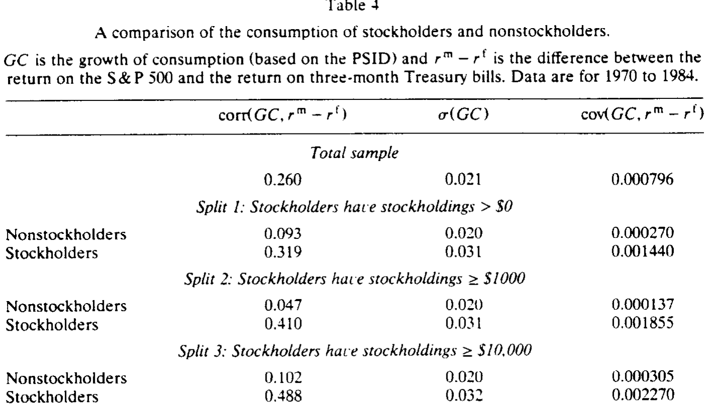
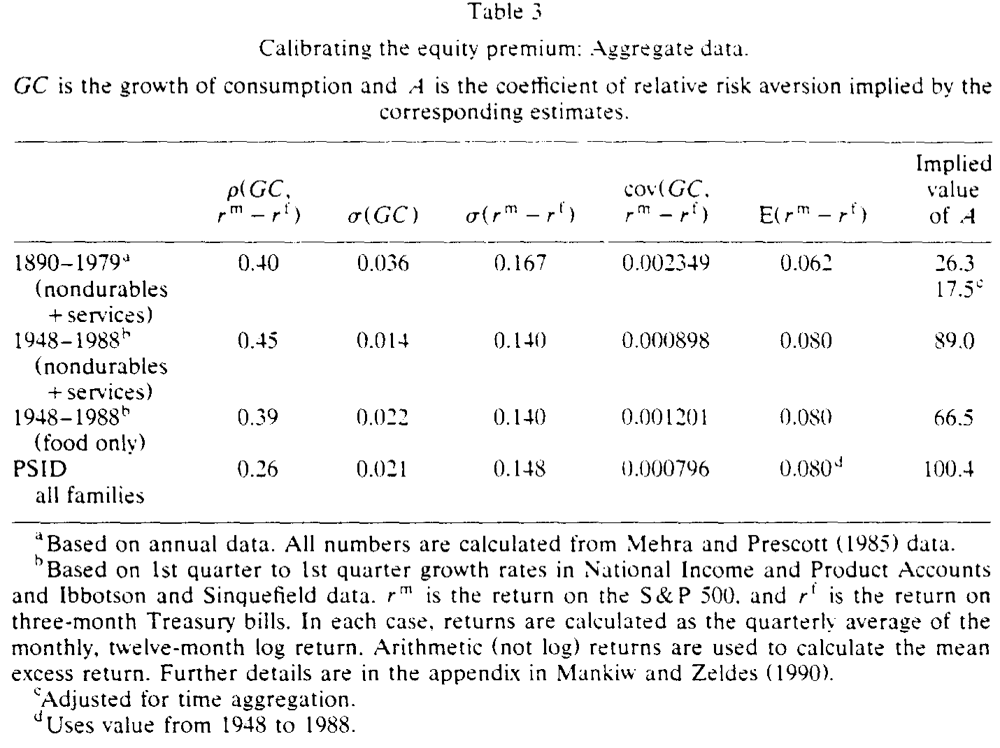
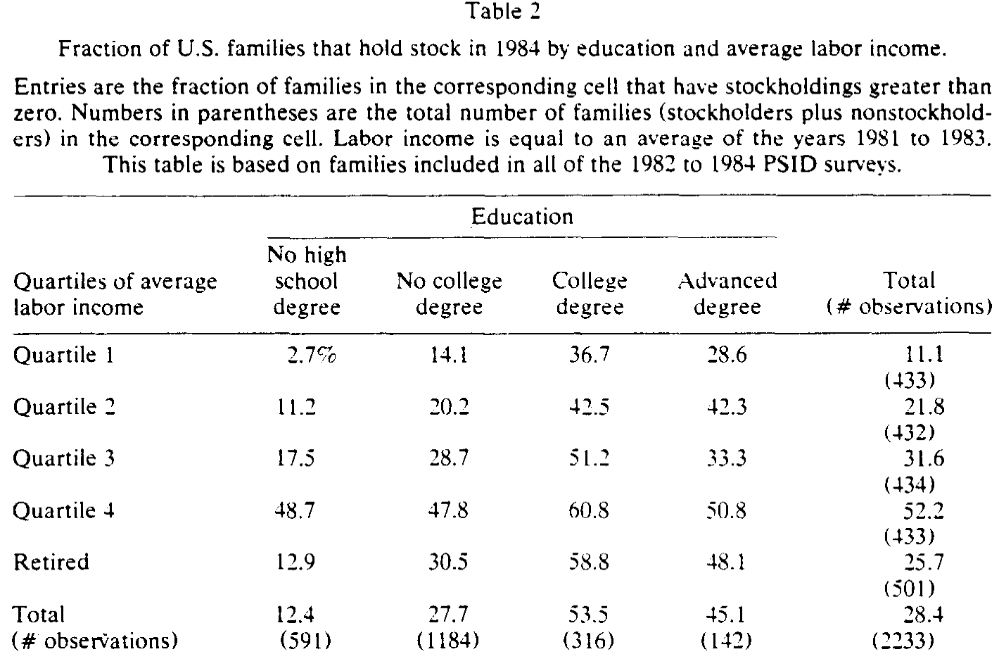
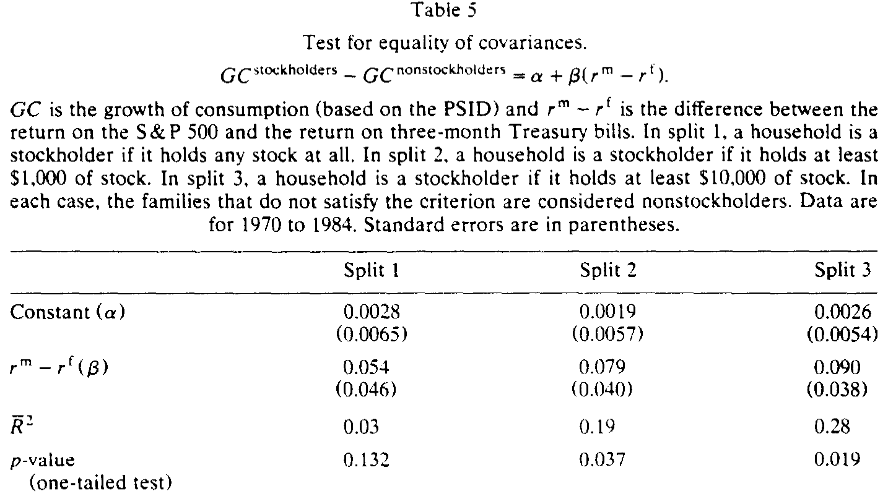
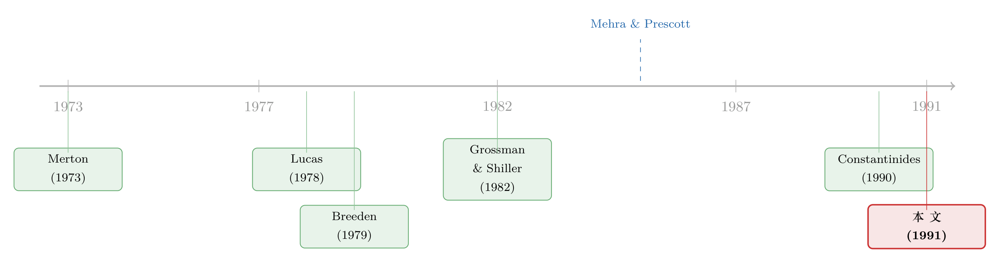

四分之三的人不在场：股权溢价之谜，错在我们把消费「平均」了
本文读的是 Mankiw & Zeldes (1991, Journal of Financial Economics)：只有约四分之一的美国家庭持有股票，而股东的消费比非股东更波动、也更紧地跟着股市的超额收益走。把「不在场」的非股东从总量消费里剔除出去，股东消费与股票收益的协方差要高出 5 到 7 倍——这让股权溢价之谜显得没那么离谱，却仍然没能把它彻底解开。
1 一个被「平均」掩盖的事实
先说一个几乎所有资产定价检验都默认、却很少有人停下来追问的前提：当我们用「人均消费」去对照股票收益时，我们到底在对照谁的消费？
教科书里的 消费资本资产定价模型 (consumption-based CAPM, 简称消费 CAPM) 有一个干净到迷人的逻辑——一个理性的投资者，会一直调整自己的持仓，直到「多持有一单位某资产带来的边际效用」恰好被「放弃当期消费的边际效用」抵消。于是资产的风险溢价，就被它与消费增长的协方差牢牢锁定。这套逻辑漂亮，但它有一个隐含的身份假设：做这道一阶条件题的人，手里得真的有股票。
可现实是什么样？Mankiw 和 Zeldes 翻开 收入动态追踪调查 (Panel Study of Income Dynamics, PSID) 的家庭财富数据，数出来一个让人有点意外的比例：在 1984 年的 2,998 个家庭里，只有 27.6% 持有正数额的股票，72.4% 一股不持。更极端的是，持股超过 $1,000 的只有 23.2%，超过 $10,000 的仅 11.9%。

Table 1
换句话说，当我们把全社会的消费「平均」成一条人均消费序列、再拿去检验消费 CAPM 时，这条序列里有四分之三的人，根本就没在玩这个游戏。他们不满足那个一阶条件——可能是因为穷到没有任何流动资产（数据里 43.2% 的非股东，流动资产不足 $1,000，几乎肯定受 流动性约束 (liquidity constraints) 所限），也可能是因为信息成本太高而懒得参与。无论原因为何，把局外人的消费掺进来一起检验一个只对局内人成立的模型，从一开始就错了。
这就是这篇 1991 年论文的全部张力所在。它不提出什么花哨的新效用函数，只是固执地问一句：如果我们只看股东的消费，会不会看到一幅不一样的图景？
2 先把谜题讲清楚：6% 的溢价，需要一个「疯子」
要理解这篇文章的贡献，得先理解它要攻打的那座堡垒——股权溢价之谜 (equity premium puzzle)。
故事的起点是消费 CAPM 的个体优化问题。一个投资者选择持仓，最大化
$$ E \int_0^\infty e^{-\delta s}\, U(C_{t+s})\, ds, $$
其中 \(C\) 是消费，\(U(\cdot)\) 是瞬时效用函数，\(\delta\) 是主观时间偏好率。在任意两个时点之间，最优持仓的一阶条件是
$$ E\!\left[\frac{U'(C_{t+s})\,e^{-\delta s}}{U'(C_t)}\,(1+R^i_{t,t+s})\right] = 1, $$
这里 \(R^i_{t,t+s}\) 是资产 \(i\) 在 \(t\) 到 \(t+s\) 之间的回报率。直觉上，它说的是：用边际效用贴现后的资产总回报，期望值应当恰好为 1——多投一块钱不亏不赚，这才是最优。
假设效用取常相对风险厌恶 (isoelastic / CRRA) 形式，\(A\) 是 Arrow-Pratt 相对风险厌恶系数，对一阶条件做泰勒展开，可以导出消费增长与资产回报之间的关系：
$$ E(R^i) = A\,E(GC_t) + \delta - \tfrac{1}{2}A(A+1)\,\mathrm{var}(GC_t) + A\,\mathrm{cov}(R^i, GC_t), $$
其中 \(GC_t\) 是消费的瞬时增长率。把任意两种资产 \(i\)、\(j\) 相减，那些与具体资产无关的项全部消掉，只剩下一条极其干净的式子：
$$ E(R^i - R^j) = A\cdot \mathrm{cov}(R^i - R^j,\, GC_t). $$
这就是整篇文章的「七寸」。Grossman 和 Shiller (1982) 证明了一件关键的事：这条式子不仅对单个投资者成立，对任意一组「都处于内部解」的投资者的加总消费也成立（若各人风险厌恶不同，\(A\) 是它们的加权调和平均）。注意「都处于内部解」这个限定——它正是后文做文章的地方。
现在令 \(i\) 是股票市场组合、\(j\) 是短期国债，上式就变成股权溢价的方程。把协方差拆成相关系数乘以两个标准差，得到本文最核心的一个表达式：
谜题就藏在这个乘法里。左边 \(E(R^m - R^f)\) 在历史上大约是 6%，是个不算小的数；右边除了 \(\sigma(R^m-R^f)\)，其余两项——消费与股市的相关系数、消费增长的波动率——都小得可怜。于是要让等式成立，唯一的出路就是把 \(A\) 顶到一个高得离谱的水平。
到底有多离谱？Mankiw 和 Zeldes 用不同数据各算了一遍。用 Mehra-Prescott (1985) 那套 1890–1979 年的年度数据，相关系数 0.40、消费增长标准差 0.036、超额收益标准差 0.167、平均超额收益 0.062，反推出 \(A = 26.3\)（经时间加总偏误调整后是 17.5）。换成战后数据、换成只算食品消费、换成 PSID 的总量食品消费，\(A\) 一路飙到 89.0、66.5，乃至 100.4。

Table 3
100 这个数字有多荒谬？作者举了一个我特别喜欢的「赌局」例子来翻译它：让你在「掷硬币赢 $50,000 或 $100,000」和「确定拿到 \(X」之间选择无差异，\)A=1$ 时你要价 $70,711，\(A=10\) 时降到 $53,991，而 \(A=30\) 时你已经只肯要 $51,209——也就是说，你愿意为了躲开这场几乎稳赚的赌局，把期望值 $75,000 砍到只剩五万出头。一个 \(A=100\) 的人，简直是个病态的胆小鬼。没人相信普通投资者是这样的。
这正是「谜题」二字的含义：不是模型算错了，而是模型要成立就必须塞进一个谁都不信的参数。（关于从另一个角度——把公司股利从总消费里「松绑」——来缩小这个缺口的尝试，可参见《把股利从消费里「松绑」：一个让股权溢价大了六倍的小裂缝》。）
3 接着，一个自然的问题是：到底谁在持有股票？
谜题的根子，作者一句话点破：总量消费增长与股票收益的协方差太小了。 而总量消费里，混着四分之三压根不持股的人。一个自然的怀疑是——会不会正是这群「局外人」，把协方差稀释掉了？
要回答这个，得先弄清楚持股与不持股的人有什么系统性差别。Table 2 按教育程度和劳动收入分组，给出持股概率。结果毫不意外，却很重要：持股概率随收入单调上升（即便控制住教育——高中学历组里，最低收入四分位只有 14.1% 持股，最高四分位高达 47.8%），也随教育程度上升（即便控制住收入——第三收入四分位里，无高中文凭的 17.5% 持股，大学文凭的 51.2% 持股）。

Table 2
这幅图景与「固定信息成本 (fixed information costs)」的故事高度吻合：收入高的人组合大，愿意付那笔进入股市的固定成本；教育高的人获取与处理信息更便宜，门槛也更低。（关于「不持股也可以是理性选择」这件事本身，后来有专门的研究把参与成本算成一笔最省的账，见《「不买股票」也能是理性的吗？——给参与成本算一笔最省的账》。）
关键的推论是：股东与非股东不是随机抽样的两半，而是系统性不同的两群人。那么没有任何先验理由保证，他们的消费会同步起伏。如果股东的消费恰好与股市贴得更紧，那么用混合后的总量消费去检验，就会系统性地低估「真正在场者」承担的风险。
4 但真正关键的一步：把消费拆成两半
光有理论怀疑还不够，得真把两群人的消费序列分别构造出来。这正是本文最硬核、也最受数据所限的一步。
PSID 里只问了食品消费——家里吃的 + 外面吃的，没有总消费支出。作者把两者各自用对应的 CPI 平减、相加，得到实际食品消费。由于持股价值只在 1984 年问过一次，他们只能用 1984 年的持股状态，把家庭「倒推」地分成股东与非股东，并设了三种切分：split 1 只要持有任何股票即算股东；split 2 门槛 $1,000；split 3 门槛 $10,000。最终在 1970–1984 年间，得到 13 个年度消费增长率观测。
数据的软肋作者自己讲得很坦白：测量误差大、时间序列短（只有 13 个点）、只有食品消费、而且用 1984 年的身份给整段历史贴标签——可纽约证券交易所的数据显示，持股人口从 1965 到 1985 年几乎翻倍，这意味着不少「1984 年的股东」在样本早期其实是非股东。这种身份的「污染」只会让两群人的差异更难被检测出来——所以但凡能测出差异，都是被低估过的下限。
然后，结果出来了。在 1970–1984 年的食品消费上，三个统计量——消费增长与超额收益的相关系数、消费增长的标准差、二者的协方差——对照如下：
- 总样本：相关系数
0.260，\(\sigma(GC)=0.021\)，协方差0.000796； - split 1：非股东相关系数
0.093、协方差0.000270，股东相关系数0.319、协方差0.001440； - split 2：非股东相关系数
0.047、\(\sigma(GC)=0.020\)、协方差0.000137，股东相关系数0.410、\(\sigma(GC)=0.031\)、协方差0.001855； - split 3：非股东相关系数
0.102、协方差0.000305，股东相关系数0.488、\(\sigma(GC)=0.032\)、协方差0.002270。
两件事跳了出来。第一，股东消费与股市的相关性远高于非股东（split 3 里 0.488 对 0.102）。第二，股东消费更波动（split 2 里 \(\sigma(GC)\) 是 0.031 对 0.020）。两者相乘，那个评估股权溢价最要命的量——消费增长与超额收益的协方差——在股东身上要大得多：split 1 大约是非股东的 5 倍，split 2、3 则超过 7 倍。
这就是反转。回到第 2 节那条 \(E(R^m - R^f) = A\cdot \mathrm{cov}(R^m - R^f, GC)\)，\(A\) 与协方差成反比。协方差大 5–7 倍，意味着解释同样 6% 溢价所需的风险厌恶，机械地缩小 5–7 倍——把 PSID 总量数据下那个荒谬的 100，拉回到二十上下。谜题没有消失，但它从「病态」变成了「仅仅是偏高」。
那这种差异在统计上靠得住吗？作者跑了一个干净利落的回归来检验「两群人的协方差是否相等」：
$$ GC^{\text{stockholders}} - GC^{\text{nonstockholders}} = \alpha + \beta\,(r^m - r^f). $$
这里的妙处在于，OLS 估出来的
$$ \hat\beta = \frac{\mathrm{cov}(GC^{\text{stockholders}} - GC^{\text{nonstockholders}},\, r^m - r^f)}{\mathrm{var}(r^m - r^f)} = \frac{\mathrm{cov}(GC^{\text{s}}, r^m-r^f) - \mathrm{cov}(GC^{\text{ns}}, r^m-r^f)}{\mathrm{var}(r^m-r^f)}. $$
也就是说，\(\beta=0\) 当且仅当股东与非股东的协方差完全相等。于是「两群人是否真的不同」这个问题，被转化成了一个简单的「\(\beta\) 是否显著为正」的检验。

Table 5
结果如表 5 所示：split 1 的 \(\beta = 0.054\)（标准误 0.046），只在 13% 的水平上显著；但随着持股门槛抬高，差异越来越清晰——split 2 的 \(\beta = 0.079\)（标准误 0.040），单侧 p 值 0.037；split 3 的 \(\beta = 0.090\)（标准误 0.038），p 值 0.019，\(R^2\) 达到 0.28。门槛越高、股东定义越「纯」，差异越显著——这恰恰是身份污染假说所预言的方向。
5 文献脉络
把这篇论文放进它生长的那条河流里看，会更清楚它的分量。
上游是消费 CAPM 的理论奠基：Merton (1973) 的跨期资本资产定价、Lucas (1978) 的交换经济资产定价、Breeden (1979) 把随机消费引入定价核，以及 Grossman 和 Shiller (1982) 那个至关重要的加总定理——它既是消费 CAPM 能用总量数据检验的依据，也正是本文用来论证「只对股东子集成立」的依据。

接着是检验与「打脸」的阶段。Hansen 和 Singleton (1983) 拒绝了模型的过度识别约束，Mankiw 和 Shapiro (1986) 发现传统 CAPM 在解释横截面均值收益上反而胜过消费 CAPM。而真正把矛盾推到风口浪尖的，是 Mehra 和 Prescott (1985) 提出的股权溢价之谜。此后的回应大致分两路：一路在「代表性消费者」框架内动手术，比如 Constantinides (1990) 的习惯形成 (habit formation)、Weil (1989) 的递归效用；另一路则诉诸个体异质性——Mankiw (1986) 的总量冲击集中度，以及 Mehra-Prescott 之前更早的若干尝试。
这篇 1991 年的论文，正站在「异质性」这条支流的源头。 它是第一篇真正去实证检验「股东与非股东消费是否不同」的工作。它没有像理论派那样发明新效用，而是把矛头指向了一个被所有人默认、却从未被审视的数据前提：消费的「加总」本身。后来一整支「有限参与 (limited participation)」文献，都可以看作沿着这条路往下走。（关于有限参与对股权溢价究竟贡献几何的后续再评估，可参见《谁被挡在股市门外，并不重要——重看「有限参与」对股权溢价的真实贡献》；而把有限参与内生化的一个模型，见《算不准均值的那群人，悄悄退出了股市》。）
6 评论与延伸（Q&A + 研究方向）
(a) 几个可能的疑问
Q：股东消费「更波动、更相关」，会不会只是因为股东更有钱、收入本身就更随股市起伏，跟资产定价的逻辑无关？
这正是本文识别上最微妙之处。作者承认股东系统性地更富、更高学历，但论文的论证不依赖「为什么」股东消费与股市更相关，只依赖「确实如此」这一事实——因为消费 CAPM 的一阶条件本就只对在场者成立。不过，若股东消费的高相关性来自劳动收入而非真正的组合再平衡，那它能否被解读为「风险」就要打问号。这是一个本文没有、也无法用食品消费数据回答的问题。
Q：只有 13 个年度观测、还只是食品消费，结论能信吗？
这是最该保留的地方。13 个点的功效极低，连 split 1 都做不到 5% 显著。作者的辩护是「污染只会让差异更难检出」，所以测出来的都是下限——这个方向性论证是站得住的。但食品消费是出了名的「平滑」品类（需求收入弹性低），用它来代表总消费，几乎肯定低估了股东消费的真实波动。换句话说，真实的协方差差距可能比 5–7 倍还大。
Q：把 1984 年的持股身份贴到 1970 年的家庭头上，不是明显的「前视」错误吗？
形式上确实是用了未来信息，但它的偏误方向是「保守」的：早期被误标为股东的人其实是非股东，这会让两组的消费序列互相靠拢，削弱而非夸大差异。所以它不会制造出虚假的显著性，只会埋没真实的差异。这是少见的「错得安全」的数据缺陷。
Q：这篇文章到底有没有「解决」股权溢价之谜？
没有，作者自己说得很清楚。它把所需风险厌恶从 ~100 拉到了二十上下，量级上改善巨大，但二十仍然偏高，谈不上「合理」。它的贡献是指出了一个方向：异质性和有限参与是绕不开的一环；彻底解决，需要更好的股东消费数据。
Q：和「习惯形成」那条路线相比，本文的角度有什么不同？
习惯形成（如 Constantinides 1990）是改造效用函数，让消费的边际效用对短期波动更敏感，从而放大有效风险厌恶；本文则根本不碰偏好，只主张「我们一直在用错误的消费序列做检验」。一个是改模型，一个是改数据口径——两者并不排斥，理论上可以叠加。
Q：Grossman-Shiller 加总定理在这里到底起了什么作用？
它是双刃的。一方面，它让消费 CAPM 可以用「任意一组内部解投资者」的加总消费来检验——这是文献过去用总量数据的合法性来源；另一方面，本文恰恰利用它的前提（必须都处于内部解）反将一军：非股东不在内部解上，所以全社会总量消费不满足定理条件，而股东子集的加总消费才满足。同一个定理，先松绑了总量检验，又被用来否定总量检验。
(b) 几个可能的研究问题与提案
1. 用现代微观数据重做这篇论文。 【经济故事】本文受困于 13 个食品消费观测；今天有 Consumption Expenditure Survey、PSID 扩展的总消费模块、乃至信用卡/银行流水级别的高频消费数据，可以直接构造股东 vs 非股东的总消费（而非仅食品）序列。若股东总消费的协方差差距远超食品口径下的 5–7 倍，谜题可能被进一步压缩。 【可行性】高。数据现成，识别策略与本文一致，唯一的挑战是把家庭持股状态做成时变的（解决本文的身份污染），这恰恰是现代面板数据能做到的。
2. 把「在场者」的逻辑搬到公司债与信用市场。 【经济故事】信用利差同样存在「过大」之谜（结构模型解释不了的那部分）。持有公司债的，是一个比股东更窄、更机构化的群体。若用机构债券持有人的「负债侧现金流/赎回压力」而非总量消费去对照信用利差，是否也能缩小利差之谜？机制与本文同源：定价的边际投资者，不是社会平均的那个人。 【可行性】中。需要保险公司、债券基金的持仓与现金流数据（NAIC、基金披露可得），识别上要论证「谁是边际持有人」，这一步不轻松，但方向清晰。
3. 外资持有人是不是另一类「身份特殊」的边际投资者？ 【经济故事】本文的核心是「持有者与非持有者系统性不同」。在跨境市场，外资持有人的消费/财富过程与本国投资者迥异，他们的边际效用由本国（而非投资标的国）的状态变量驱动。这是否能解释一些跨国资产定价异象（如本土偏好溢价、外资可投资股票的定价差异）？ 【可行性】中。需要按投资者国籍切分的持仓数据（如某些新兴市场的「外资板」），识别策略可借鉴本文的「分组协方差检验」，把外资与本地投资者的边际效用代理变量分别对照收益。
4. 流动性约束群体的消费，能否解释「无风险利率之谜」？ 【经济故事】Mehra-Prescott 之谜其实有两半：股权溢价过高，以及无风险利率过低。本文聚焦前者。但流动性受限的非股东（数据里那 31.3%）正是无风险利率谜题的关键嫌疑人——他们想借却借不到，其影子利率远高于市场无风险利率。把这群人单独建模，是否能同时改善两半谜题？ 【可行性】中偏低。需要可信地识别「谁受约束」，且无风险利率谜题对模型设定极敏感，结论稳健性是主要风险。
参考文献
- Breeden, Douglas T. (1979). An intertemporal capital asset pricing model with stochastic consumption and investment opportunities. Journal of Financial Economics 7, 265–296.
- Constantinides, George M. (1990). Habit formation: A resolution of the equity premium puzzle. Journal of Political Economy 98, 519–543.
- Grossman, Sanford J. and Robert J. Shiller (1982). Consumption correlatedness and risk measurement in economies with non-traded assets and heterogeneous information. Journal of Financial Economics 10, 195–210.
- Hansen, Lars Peter and Kenneth J. Singleton (1983). Stochastic consumption, risk aversion, and the temporal behavior of asset returns. Journal of Political Economy 91, 249–265.
- Lucas, Robert E., Jr. (1978). Asset prices in an exchange economy. Econometrica 46, 1129–1145.
- Mankiw, N. Gregory (1986). The equity premium and the concentration of aggregate shocks. Journal of Financial Economics 17, 211–219.
- Mankiw, N. Gregory and Matthew D. Shapiro (1986). Risk and return: Consumption beta versus market beta. Review of Economics and Statistics 68, 452–459.
- Mankiw, N. Gregory and Stephen P. Zeldes (1991). The consumption of stockholders and nonstockholders. Journal of Financial Economics 29(1), 97–112.
- Mehra, Rajnish and Edward C. Prescott (1985). The equity premium: A puzzle. Journal of Monetary Economics 15, 145–161.
- Merton, Robert C. (1973). An intertemporal capital asset pricing model. Econometrica 41, 867–887.
- Weil, Philippe (1989). The equity premium puzzle and the riskfree rate puzzle. Journal of Monetary Economics 24, 401–421.
- Zeldes, Stephen P. (1989). Consumption and liquidity constraints: An empirical investigation. Journal of Political Economy 97, 305–346.